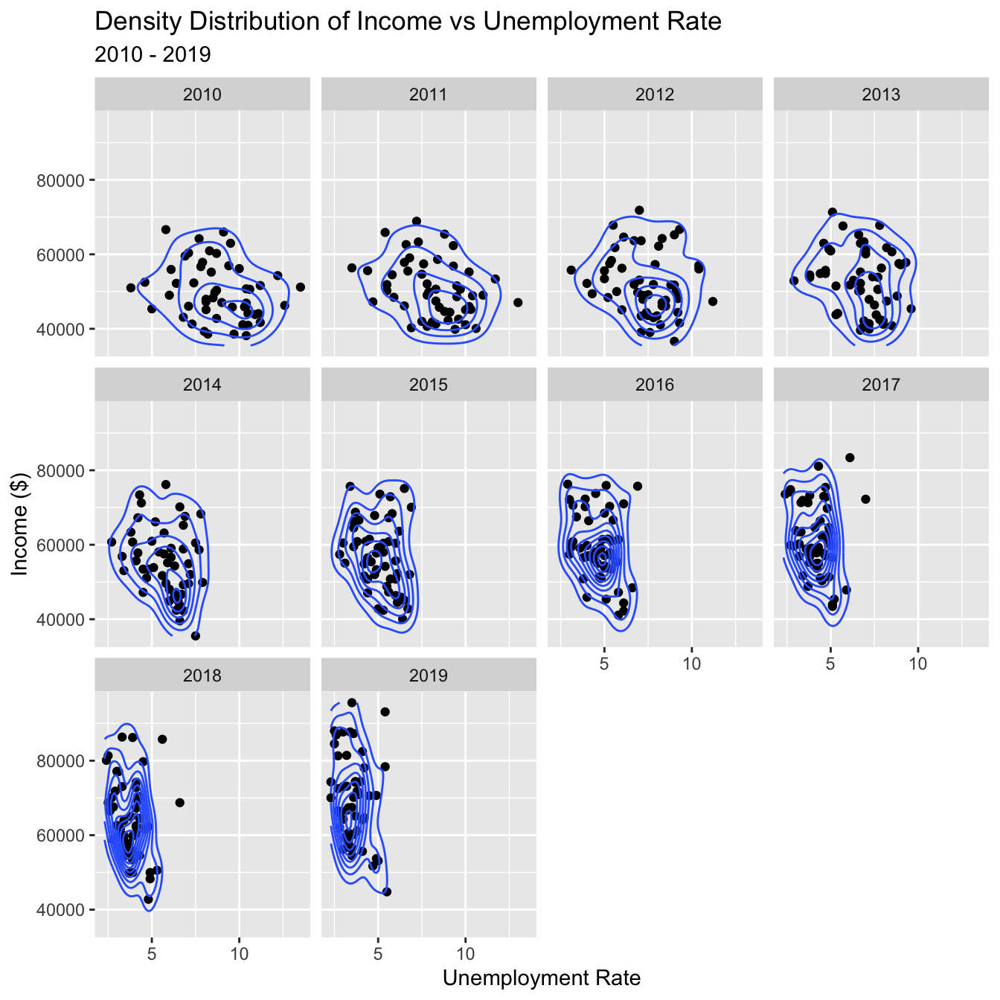
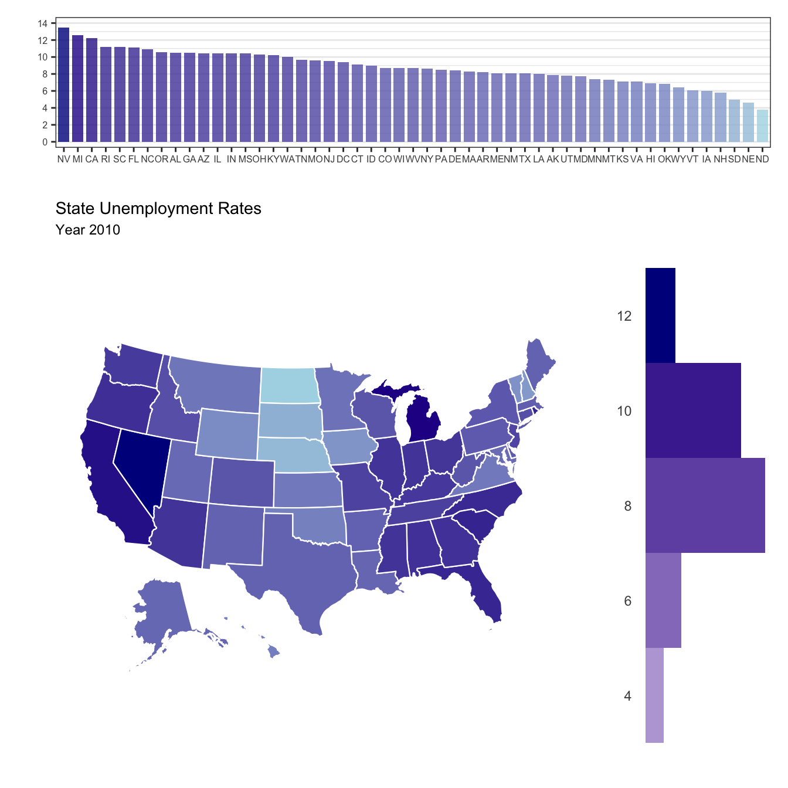
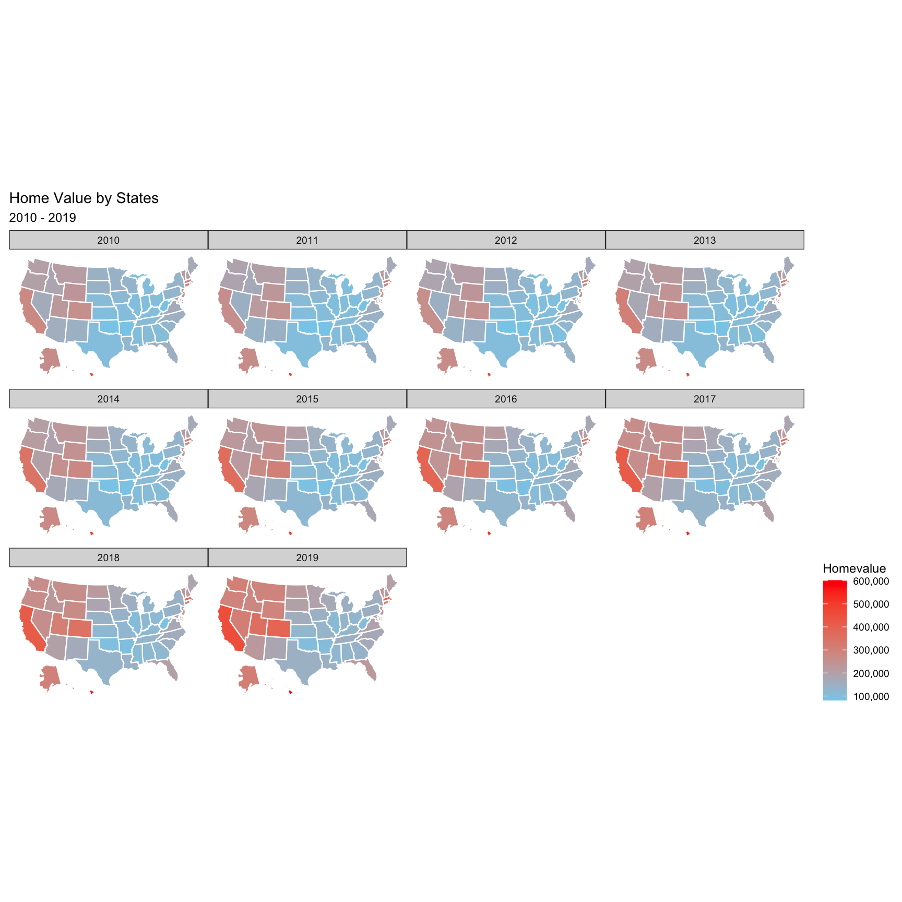
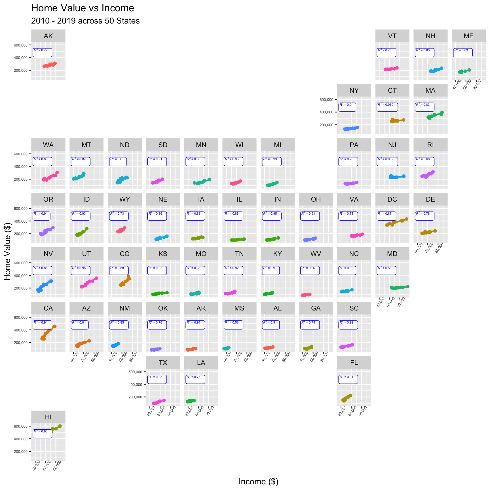
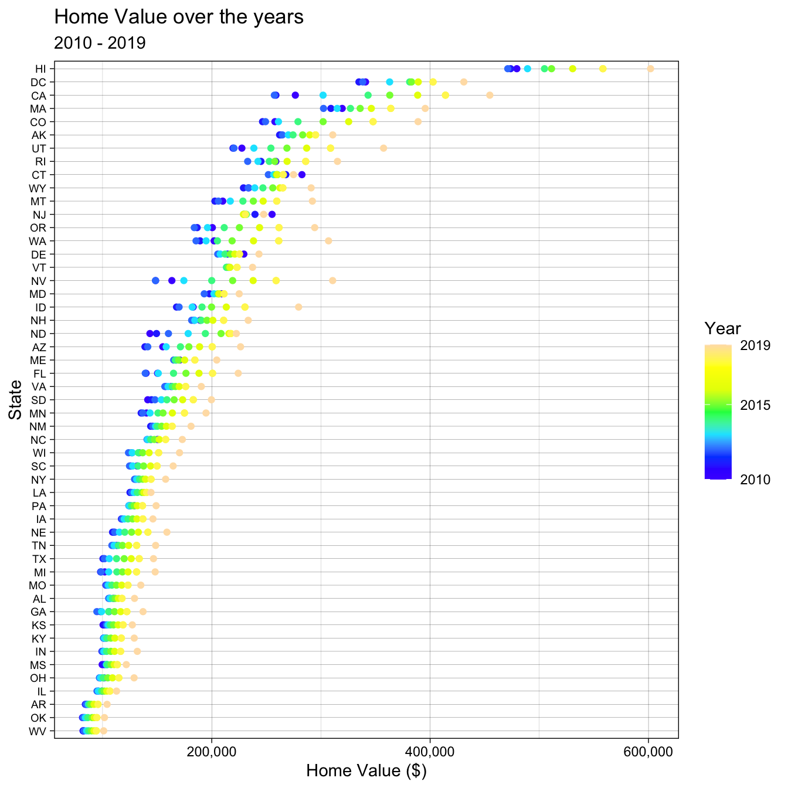

Chapter 5 Results
5.1 Understanding relationships between economic variables
In the first step of the investigation, its important to uncover relationships between each of the variables to determine the most interesting direction for the team to cover. The most obvious way is to determine whether there’s any correlations exist between home value, population, housing unit, unemployment, and income. This can be achieve through a correlation matrix, pairs plot, parallel coordinates chart.

In the correlation matrix above, it is most obvious that there is a strong correlation between population and housing unit over the years. This should be natural in normal functioning society with low number of homelessness. However, there doesn’t seem to be any correlation between population and housing unit, which is interesting because this suggests that increasing population did not put upward pressure towards home values. Again, this can indiate that the home building market is efficient and is keeping up with population thus relieving any potential pent up demand.
The second interesting observation here is the correlation (0.62) between income and home value. This suggests that increase in income in a State is also linked to increasing home values. Delving deeper, unemployment rate is negatively correlated (-0.52) to income but has little to no correlation (-0.18) to home values. This is interesting because perhaps income is a bridging variable that connect unemployment to home values.
These results confirm this by viewing in a different perspective via parallel coordinates chart.

By graphing the parallel coordinates plot and faceting over the years, the results confirm the relationships between unemployment rate, income, and home value. Furthermore, it provides insights into how it changes over time. The results suggest that following the 2008 recession unemployment rate steadily declined which lead to a increase income and then lead to an increase in home value in some states. It also confirms that population and housing unit are coorelated with each other but have no correlations with other variables.
5.2 Visualizing the known relationships
After discovering the relationships between unemployment rate, income, and home value, we can extrapolate further by visualizing relationships between these variables in different perspectives.

Reviewing the distribution between those 3 variables, the economic trends becomes much more apparent. First, focusing on unemployment rates vs income, following the financial crisis in 2010, unemployment rate across U.S. has a huge variance between 4% to 13%. During this year and the subsequent years, wages were capped between $40k to $80k. It wasn’t until unemployment rate was under control and below 7.5% that wages collectively increased.
Now that we understand unemployment rate is a prerequisite for rising income, we can focus on income vs home values. Throughout the years, it can be observed that rising income leads to more expensive home prices. In fact, a wider range in income actually leads to a wider distribution of home value prices. In the beginning of the decade when income was much less distributed, home values across states also had less variance and was clustered under $200k per home. However, towards the end of the decade in 2019, home values & and income became significantly more distributed.
5.3 Observing key variables across geographies
Now that these relationships are better understood, let’s explore how these trends shift and compare across different geographies.
We will first look at unemployment rate over the past decade.

From our observations of the choropleth heat map over time, West & South East had the most severe unemployment rate in 2010. The recovery in the 9 years since then is significant. States like Nevada and California bridged 5-7% differences. It is notable because California had one of the highest unemployment rates but now commands some of the highest home prices in the U.S.

Taking a closer look in the unemployment landscape of 2010, the results are remarkable given the current state of employment rates & home values. Notable states that had the highest unemployment rates amongst States are Nevada, Michigan, California, and Florida. As we review Income & Home Value, it will be more apparent that these States are notable because of their dramatic recovery.
As unemployment rate improved, the states that had the worst unemployment rates actually turned to have the highest incomes or neighbor states that have the highest income.

Noted form before, home values typically follow income. The states that developed the highest income also developed comparatively higher home prices. However, looking at the map, there’s another notable trend that can be observed. Despite having some of the highest income in US, the home prices in the Northeastern part of the country did not rise as dramatically as the Western part of the US. There’s not enough data to conclusively understand why; perhaps we can augment the analysis in the future with weather data, sentiments, etc. to better understand.

Lastly, by graphic Income vs Home Value for each of the State, we can validate our findings with a trend a line and Rsquared values. We can confirm that the notable Western States (e.g. CA & NV) have a steeper slope when compared to the rest of the States; this supports our theory that it has the fastest growth in income and home value prices over the last decade.
We can also confirm that select Northeastern States have an increase in income but home value has not grown comparatively (e.g. NJ & CT)
5.4 Price comparison of Home Value
Finally, to conclude this study, we will further investigate home value to better understand the specifics of how it changes for each State over the years. Through understanding the price dynamics across the market, we can perhaps help buyers/readers understand the history and navigate purchasing decisions.

From the above Cleveland Dot Plot, it is apparent that the most expensive States continued to be the most expensive. The markets that are hottest actually had the biggest price increases from the past decade and increased prices in multiples while cheaper markets only have modest gains (e.g. HI, CA, etc.)
It is notable that most States have the highest value in the most recent year of 2019 with a few exceptions: Rhode Island & New Jersey.

Next, we can divide the geography into the 4 major regions in US. Looking at the distributions, here are the main insights:
- The order of descending median home values are as follows: West, NorthEast, South, and MidWest.
- West has the most amount outliers on the bottom range and top range.
- Although South has a lower median than Northeast, the most expensive outliers are more expensive than most of Northeast.
- Northeast distribution of prices have remained relatively stable throughout the decade.
- Midwest has the cheapest real estate and also the most narrow distribution
As a final statement in this study, we also want to learn whether the growth in income have kept pace with the growth in home value. After all, if income was not able to keep pace, then the rise in home value could actually be a detriment to communities because it makes the housing less affordable. We do this by charting Value/Income.
For the most part, states have maintained or improved on this ratio; we can observe this by the flat to downward slope. This is especially apparent in the Northeastern part of U.S.
On the other hand, the Western Part of the US which have seen significant increase in Home Value have actually deteriorated this ratio; we can observe this by the positive slope. This is especially apparent for States such as CA, NV, CO, etc.